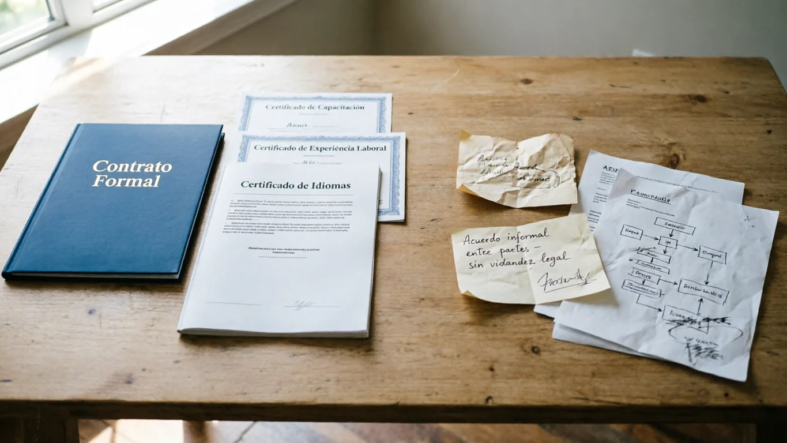

Triar l'empresa adequada per al buidatge d'un pis a Barcelona no és només qüestió de preu. És una decisió que impacta directament en la seguretat jurídica, la gestió d'objectes amb valor sentimental i la tranquil·litat durant tot el procés. Cada mes atenem clients que han tingut males experiències per no disposar de criteris clars. Aquesta guia està dissenyada perquè vostè prengui la decisió correcta.
El 70% dels problemes en buidatges (pressupostos inflats, residus mal gestionats, objectes perduts) s'evitarien amb una simple verificació prèvia de l'empresa.
8 senyals de confiança (i com verificar-les)
Una empresa seriosa compleix amb estàndards clars des del primer contacte. Aquestes són les senyals que no ha de passar per alt:
1. Pressupost desglossat
Exigeixi un pressupost per escrit amb tots els conceptes. Desconfiï d'ofertes "massa bones" sense explicació o de preus "a ull".
2. Experiència comprovable
Busqui empreses amb almenys 3 anys de trajectòria. Demani casos reals o referències de treballs similars a Barcelona.
3. Contracte per escrit
Mai contracti sense contracte formal. Ha d'incloure terminis, serveis inclosos, forma de pagament i clàusula de protecció d'objectes.
4. Gestió legal de residus
Asseguri's que emeten certificat de l'Agència de Residus de Catalunya (ARC). És la seva garantia que els residus no acaben en un descampat.
5. Referències reals
Les empreses professionals ofereixen contactes de clients satisfets (prèvia autorització) o mostren testimonis verificats.
6. Especialització en el seu cas
Tenen experiència en situacions com la seva? (defunció, síndrome de Diògenes, naus, herències). L'especialització evita problemes.
7. Terminis realistes
Promeses de "buidatge en 4 hores" solen ser enganyoses. Una empresa seriosa ofereix un termini realista i el compleix.
8. Presència local real
Prefereixi empreses amb base operativa a Barcelona o àrea metropolitana. Eviti intermediaris sense control directe de l'equip.
Si l'empresa no està inscrita com a transportista de residus al registre de l'ARC, vostè pot ser considerat responsable subsidiari d'una gestió il·legal. Exigeixi el número de registre.
Preguntes que HA de fer abans de contractar
El pressupost és tancat?
Inclou TOTS els costos: mà d'obra, transport, gestió de residus, certificats?
Com gestionen objectes de valor?
Fan inventari fotogràfic? Entreguen acta d'objectes apartats?
Quina documentació rebo al final?
Contracte, factura, certificat ARC i justificant de lliurament en punt verd autoritzat.
Què passa si no compleixen terminis?
Una empresa seriosa estableix penalitzacions o compensacions al contracte.
Errors freqüents i com evitar-los
-
Triar només pel preu més baix
El preu més baix sol amagar costos addicionals, personal no qualificat o gestió il·legal de residus. Compareu serveis, no només xifres.
✓ Solució: Sol·liciti desglossament i compari almenys 3 pressupostos detallats. -
No demanar contracte per escrit
Els acords verbals són la principal font de conflictes: canvis de preu, terminis incomplerts, manca de cobertura.
✓ Solució: Exigeixi contracte amb clàusules clares. Si es neguen, descarti. -
No verificar la gestió de residus
Si llencen els seus mobles en un descampat, vostè pot ser multat. És imprescindible el certificat de gestor autoritzat.
✓ Solució: Demani el número de registre ARC i comprovi'l a residus.gencat.cat -
No documentar l'estat del pis abans del buidatge
En cas de disputa sobre objectes de valor o danys, sense fotos prèvies no hi ha manera de reclamar.
✓ Solució: Faci fotos de totes les estances o exigeixi inventari fotogràfic professional. -
Contractar un particular sense assegurança
Si un treballador es lesiona a la seva propietat i no té assegurança, la responsabilitat recau sobre vostè.
✓ Solució: Asseguri's que l'empresa té assegurança de responsabilitat civil i d'accidents.
Comparativa visual: Empresa professional vs. "xiringuito"
| Característica | Empresa Professional | Opció de Risc |
|---|---|---|
| Pressupost | ✓ Detallat i tancat | ✗ Preu "aproximat" |
| Contracte | ✓ Formal i signat | ✗ Acord verbal |
| Gestió residus | ✓ Certificada (ARC) | ✗ Sense justificant |
| Assegurances | ✓ RC i accidents | ✗ Sense cobertura |
| Referències | ✓ Comprovables | ✗ Sense clients anteriors |
| Inventari | ✓ Fotogràfic | ✗ Inexistent |

Consells pràctics abans de signar
La transparència no és un detall, és la base. Segueixi aquests passos i reduirà el risc al mínim:
Si una empresa no pot respondre amb claredat a aquestes tres preguntes: "Estan registrats a l'ARC?", "Em donen contracte per escrit?" i "El pressupost és tancat?", no contracti.
Quan val la pena contractar una empresa professional?
No sempre és necessari delegar, però hi ha situacions on una empresa especialitzada és l'única opció viable i rendible:
Terminis ajustats
Entrega de lloguer, venda imminent o tràmits notarials que no esperen.
Volum considerable
Quan el contingut del pis supera la capacitat de transport particular.
Necessita certificat legal
Per a herències, compravendes o justificar davant l'administració.
Càrrega emocional alta
En casos de defunció o síndrome de Diògenes, delegar la logística permet centrar-se en l'important.
Distància geogràfica
Si la família resideix fora de Barcelona, el cost de desplaçaments supera al del servei.
Conflictes entre hereus
Un tercer neutral amb inventari documentat evita disputes.
A punt per triar amb confiança?
El visitem, valorem i li donem un pressupost tancat sense compromís. Gestió documentada i amb certificació legal.
Preguntes freqüents
No necessàriament. El preu més baix sol amagar costos addicionals o mala praxi. Compareu valor, serveis inclosos i garanties, no només el preu final.
Recomanem comparar almenys 3 opcions. Però assegureu-vos de comparar serveis equivalents (certificats, gestió de residus, personal).
Contracte signat, pressupost detallat, certificat de gestió de residus autoritzat i factura final amb IVA desglossat.
Comprovi la seva antiguitat, demani referències reals, verifiqui que estiguin al registre de l'ARC i busqui opinions independents.
Conclusió: inverteixi 10 minuts a verificar, estalviï problemes
Triar correctament la seva empresa de buidatge és el primer pas per garantir un procés net, legal i sense estrès. Segueixi aquesta guia, compari amb criteri i prioritzi la transparència sobre el preu inicial. Així evitarà el 90% dels problemes que afecten els qui trien malament.